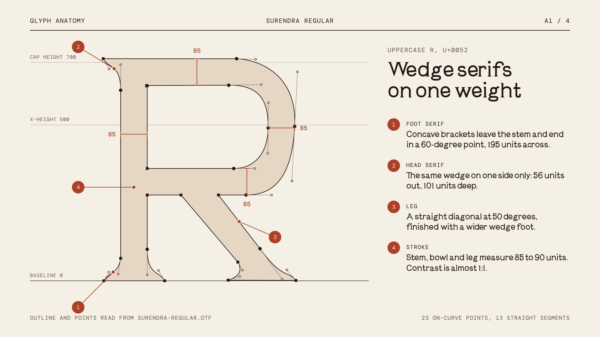
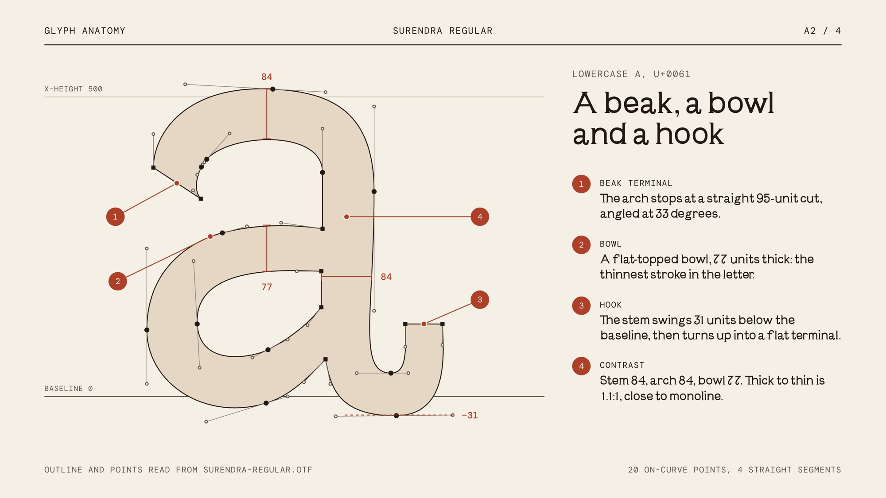
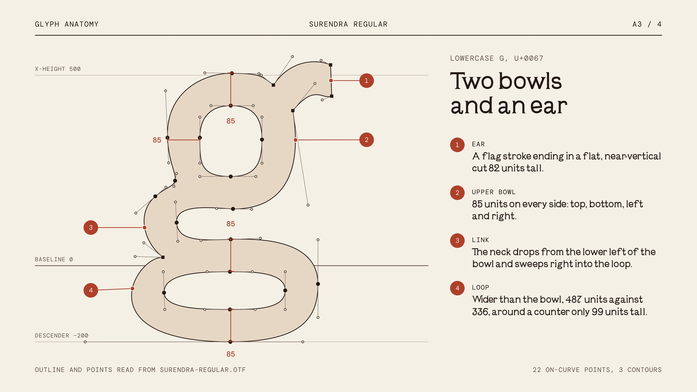
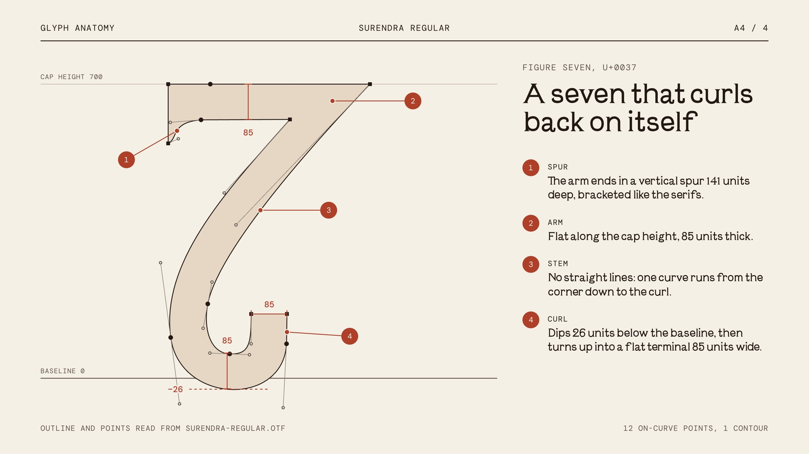
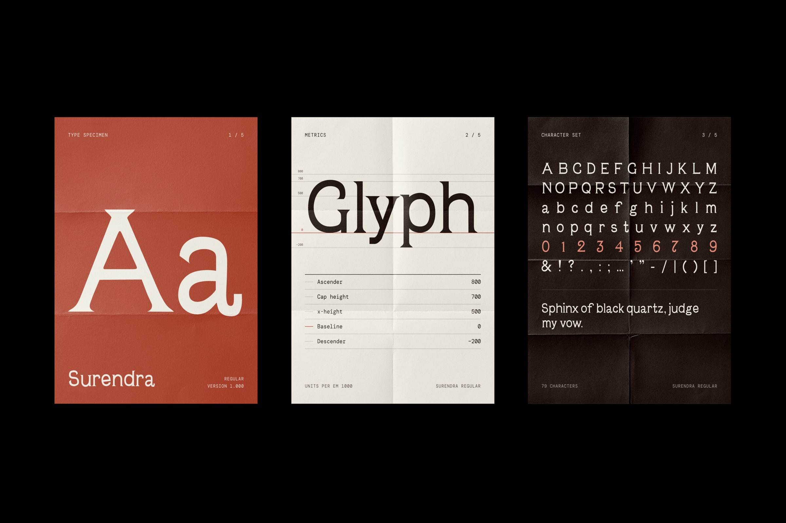
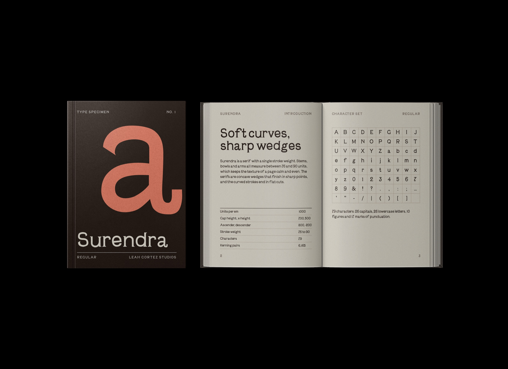

Surendra
A custom serif typeface inspired by historical wood and metal type, developed through distinctive letterforms, wedge serifs, and expressive details.
- Role
- Typeface design, graphic design
- Deliverables
- Typeface, glyph set, specimen poster
Surendra explores how the character of historical type can be translated into a contemporary digital typeface. The focus is on the construction of the letterforms themselves: their proportions, terminals, contrast, and the small irregularities that give a typeface its personality.
The project combines type research, letterform development, and specimen design to explore how historical references can inform a contemporary typeface.
- Historical type research
- Custom typeface design
- Uppercase and lowercase characters
- Numerals and punctuation
- Typeface specimen poster
Starting from old type.
I collected wood and metal type specimens and studied what made their letters feel so physical: uneven weight, soft corners, and the way ink spreads at the edges. The goal was to borrow that character without copying any one archival face.

Drawing the glyph set.
I sketched the letterforms by hand first, then rebuilt them digitally. From there it was spacing, kerning and consistency, checking that every character belonged to the same family.

The parts of the letters.








Surendra is a soft, low-contrast serif with wedge-shaped serifs and distinctive details that give the letterforms their character. The slanted e and the curled terminal of the 7 are examples of how individual shapes contribute to the personality of the typeface without making the overall character set feel inconsistent.
The typeface is designed to work at display sizes, where the shapes and spacing of individual letters can be appreciated. Its forms balance historical references with a more contemporary, expressive character rather than directly reproducing an existing historical typeface.
The specimen presents the name Surendra alongside the uppercase and lowercase alphabets, numerals, and punctuation. Generous spacing and a restrained cream background allow the letterforms to remain the focus. Thin dividing rules and compact font information organize the page without competing with the typography.
The typeface is also used for headings throughout my portfolio, allowing its character to extend beyond the specimen into a working digital environment.